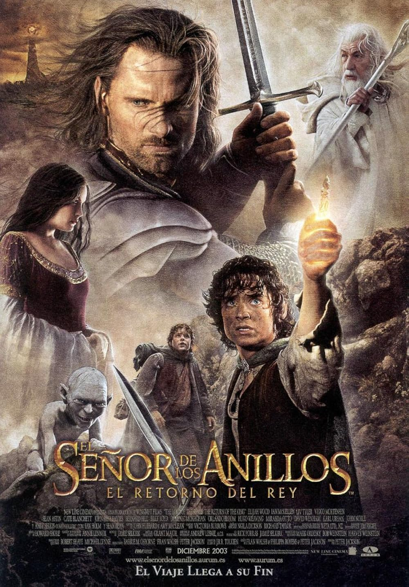
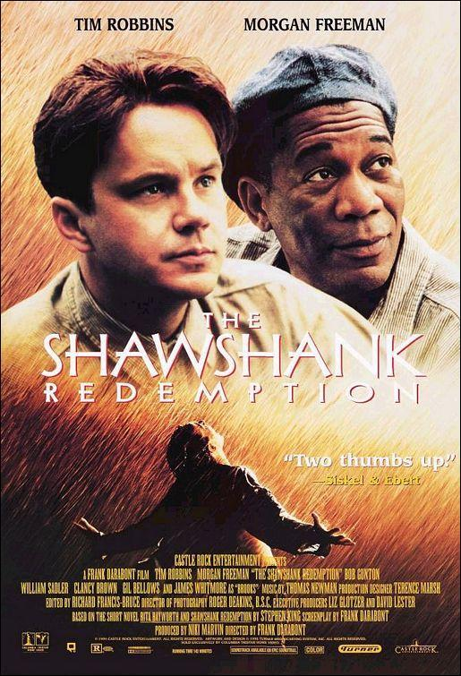
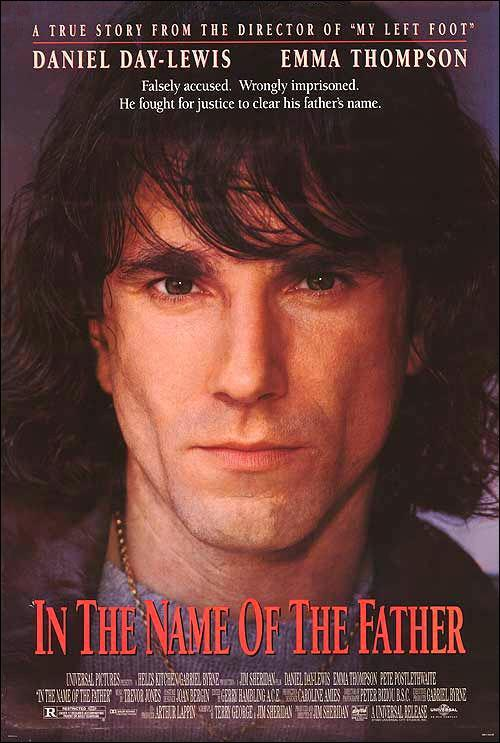

Peliculas favoritas de Omar
Puesto 1: El Señor de los Anillos: El Retorno del Rey
2003 · 3h 21m · Fantasía
Reparto: Elijah Wood, Viggo Mortensen, Ian McKellen, Orlando Bloom, Sean Astin
Director: Peter Jackson
Valoración: ⭐⭐⭐⭐⭐

Sinopsis: Las fuerzas de Sauron se lanzan en un ataque definitivo contra Minas Tirith, la capital de Gondor, mientras Frodo y Sam se adentran en Mordor para destruir el Anillo Único en el Monte del Destino. Aragorn debe reclamar su destino como rey y unir a los pueblos libres de la Tierra Media en una última batalla por la supervivencia. La conclusión épica de la trilogía de Peter Jackson.
Trailer
Puesto 2: Dune
2021 · 2h 35m · Ciencia ficción
Reparto: Timothée Chalamet, Zendaya, Oscar Isaac, Rebecca Ferguson, Josh Brolin
Director: Denis Villeneuve
Valoración: ⭐⭐⭐⭐⭐

Sinopsis: En un futuro lejano, el joven Paul Atreides viaja junto a su familia al planeta desértico Arrakis, único lugar donde se extrae la especia melange, la sustancia más valiosa del universo. Tras una traición devastadora, Paul deberá aliarse con los nativos Fremen para sobrevivir y cumplir un destino que podría cambiar el curso de la historia galáctica.
Trailer
Puesto 3: Interstellar
2014 · 2h 49m · Ciencia ficción
Reparto: Matthew McConaughey, Anne Hathaway, Jessica Chastain, Michael Caine, Matt Damon
Director: Christopher Nolan
Valoración: ⭐⭐⭐⭐⭐

Sinopsis: En un futuro donde la Tierra agoniza por plagas y hambrunas, el expiloto Cooper se embarca en una misión espacial a través de un agujero de gusano en busca de un nuevo hogar para la humanidad. Mientras explora planetas en otra galaxia, deberá lidiar con la dilatación temporal que amenaza con separarlo para siempre de sus hijos.
Trailer
Puesto 4: Coach Carter
2005 · 2h 16m · Deporte
Reparto: Samuel L. Jackson, Rob Brown, Rick Gonzalez, Robert Ri'chard, Channing Tatum
Director: Thomas Carter

Sinopsis: Basada en hechos reales, la película sigue a Ken Carter, un entrenador de baloncesto que regresa a su antiguo instituto en Richmond, California. Carter impone un estricto contrato académico a sus jugadores, provocando una enorme controversia cuando decide cerrar el gimnasio y cancelar partidos porque el equipo no cumple con sus obligaciones escolares.
Trailer
Puesto 5: Spider-Man: Un Nuevo Universo
2018 · 1h 57m · Animación
Reparto: Shameik Moore, Jake Johnson, Hailee Steinfeld, Mahershala Ali, Nicolas Cage
Directores: Bob Persichetti
Valoración: ⭐⭐⭐⭐⭐

Sinopsis: Miles Morales, un adolescente de Brooklyn, se convierte en el nuevo Spider-Man tras ser mordido por una araña radiactiva. Cuando un acelerador de partículas abre portales a otras dimensiones, Miles se une a un grupo de Spider-People de universos alternativos para detener al Kingpin y salvar el multiverso.
Trailer
Peliculas favoritas de Nydia
Puesto 1: Una jaula de grillos
1996 · 1h 57m · Comedia
Reparto: Robin Williams, Gene Hackman, Nathan Lane, Dianne Wiest, Hank Azaria
Director: Mike Nichols
Valoración: ⭐⭐⭐⭐⭐

Sinopsis: Armand y Albert son una pareja homosexual que regenta un cabaret de drag queens en Miami. Cuando el hijo de Armand anuncia que se casa con la hija de un senador ultraconservador, ambos deberán fingir ser una familia convencional para la cena con los padres de la novia.
Trailer
Puesto 2: Fight Club
1999 · 2h 19m · Drama, Thriller
Reparto: Brad Pitt, Edward Norton, Helena Bonham Carter, Meat Loaf, Jared Leto
Director: David Fincher
Valoración: ⭐⭐⭐⭐⭐

Sinopsis: Un oficinista insomne y desesperadamente insatisfecho con su vida consumista conoce a Tyler Durden, un carismático vendedor de jabón con una filosofía radicalmente distinta. Juntos fundan el "Club de la Lucha", un grupo clandestino de peleas a puñetazos que evoluciona hacia algo mucho más peligroso e incontrolable.
Trailer
Puesto 3: Parásitos
2019 · 2h 12m · Thriller, Drama, Comedia negra
Reparto: Song Kang-ho, Lee Sun-kyun, Cho Yeo-jeong, Choi Woo-shik, Park So-dam
Director: Bong Joon-ho
Valoración: ⭐⭐⭐⭐⭐

Sinopsis: La familia Kim, que malvive en un semisótano, idea un plan para infiltrarse en la acaudalada familia Park. Uno a uno, sus miembros consiguen trabajo en la lujosa mansión haciéndose pasar por profesionales cualificados. Pero cuando un inesperado incidente destapa un secreto oculto en la casa, las vidas de ambas familias colisionan de manera impredecible y violenta.
Trailer
Puesto 4: Whiplash
2014 · 1h 46m · Drama, Música
Reparto: Miles Teller, J.K. Simmons, Melissa Benoist, Paul Reiser
Director: Damien Chazelle

Sinopsis: Andrew Neiman, un joven y ambicioso baterista de jazz, ingresa en el mejor conservatorio de música del país donde queda bajo la tutela de Terence Fletcher, un director de banda brillante pero implacable y abusivo. La obsesión de Andrew por alcanzar la perfección y los métodos extremos de Fletcher los llevarán a un enfrentamiento psicológico que pondrá a prueba los límites del talento, la ambición y la cordura.
Trailer
Puesto 5: Figuras ocultas
2016 · 2h 7m · Drama, Biográfico, Histórico
Reparto: Taraji P. Henson, Octavia Spencer, Janelle Monáe, Kevin Costner, Kirsten Dunst
Director: Theodore Melfi
Valoración: ⭐⭐⭐⭐⭐

Sinopsis: Basada en hechos reales, narra la historia de tres brillantes matemáticas afroamericanas —Katherine Johnson, Dorothy Vaughan y Mary Jackson— que trabajaron en la NASA durante los años 60. A pesar de enfrentarse a la discriminación racial y de género en plena era de la segregación, sus cálculos fueron fundamentales para el éxito de las primeras misiones espaciales de Estados Unidos.
Trailer
Peliculas favoritas de Eduardo
Puesto 1: Cars
2006 · 1h 56m · Animación
Reparto: Owen Wilson, Paul Newman, Bonnie Hunt, Larry the Cable Guy, Tony Shalhoub
Director: John Lasseter
Valoración: ⭐⭐⭐⭐⭐

Sinopsis: Rayo McQueen, un ambicioso coche de carreras que solo piensa en ganar la Copa Pistón, se pierde de camino a la carrera más importante de su vida y acaba varado en Radiator Springs, un olvidado pueblo de la Ruta 66. Allí conocerá a un grupo de pintorescos personajes que le enseñarán que la vida es mucho más que trofeos y fama.
Trailer
Puesto 2: El padrino
1972 · 2h 55m · Drama
Reparto: Marlon Brando, Al Pacino, James Caan, Robert Duvall, Diane Keaton
Director: Francis Ford Coppola
Valoración: ⭐⭐⭐⭐⭐

Sinopsis: Don Vito Corleone, el patriarca de la familia mafiosa más poderosa de Nueva York, dirige su imperio criminal con mano firme mientras intenta traspasar el legado a su familia. Cuando un intento de asesinato lo deja al borde de la muerte, su hijo menor Michael se ve arrastrado al mundo de la violencia y el poder, transformándose en un líder despiadado.
Trailer
Puesto 3: Ciudad de Dios
2002 · 2h 10m · Drama
Reparto: Alexandre Rodrigues, Leandro Firmino, Phellipe Haagensen, Douglas Silva, Jonathan Haagensen
Director: Fernando Meirelles
Valoración: ⭐⭐⭐⭐⭐
Sinopsis: Ambientada en las favelas de Río de Janeiro entre los años 60 y 80, la película sigue a Buscapé, un joven que sueña con ser fotógrafo, y a Zé Pequeño, un despiadado narcotraficante que controla el barrio con violencia. A través de sus vidas cruzadas, se retrata la espiral de pobreza, crimen y brutalidad que atrapa a toda una generación.
Trailer
Puesto 4: Cadena Perpetua
1994 · 2h 22m · Drama
Reparto: Tim Robbins, Morgan Freeman, Bob Gunton, William Sadler, Clancy Brown
Director: Frank Darabont
Valoración: ⭐⭐⭐⭐⭐

Sinopsis: Andy Dufresne, un banquero inocente condenado a cadena perpetua por el asesinato de su esposa y su amante, ingresa en la brutal prisión de Shawshank. A lo largo de dos décadas, Andy forja una profunda amistad con Red, un preso veterano, mientras secretamente elabora un ingenioso plan de fuga.
Trailer
Puesto 5: En el nombre del padre
1993 · 2h 13m · Drama
Reparto: Daniel Day-Lewis, Pete Postlethwaite, Emma Thompson, John Lynch, Corin Redgrave
Director: Jim Sheridan
Valoración: ⭐⭐⭐⭐⭐

Sinopsis: Basada en hechos reales, la película narra la historia de Gerry Conlon, un joven irlandés que en 1974 es arrestado injustamente por la policía británica y acusado de los atentados del IRA en los pubs de Guildford. Junto a su padre Giuseppe, Gerry es condenado a cadena perpetua en un juicio plagado de irregularidades. Desde prisión, ambos luchan durante años para demostrar su inocencia.
Trailer